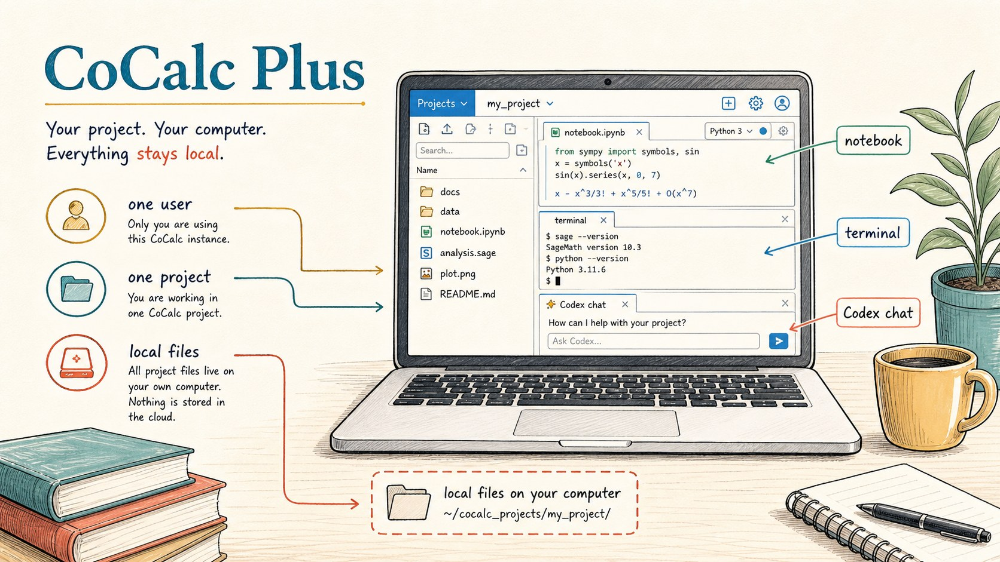
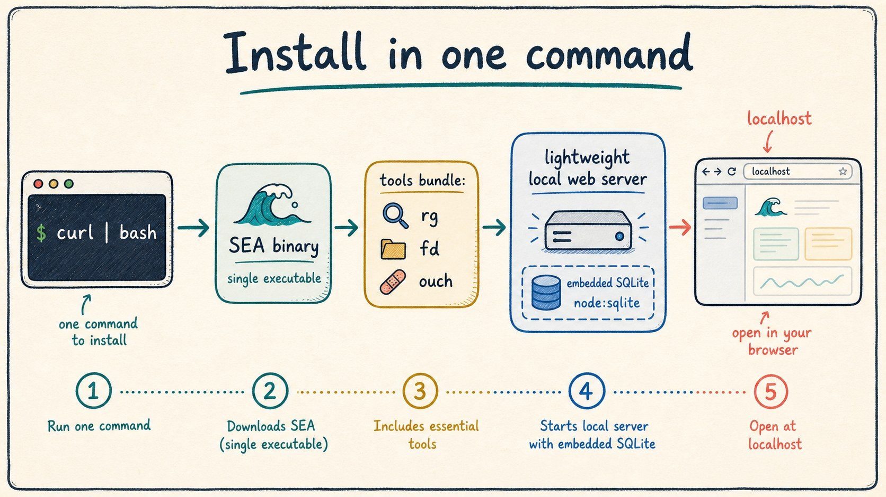
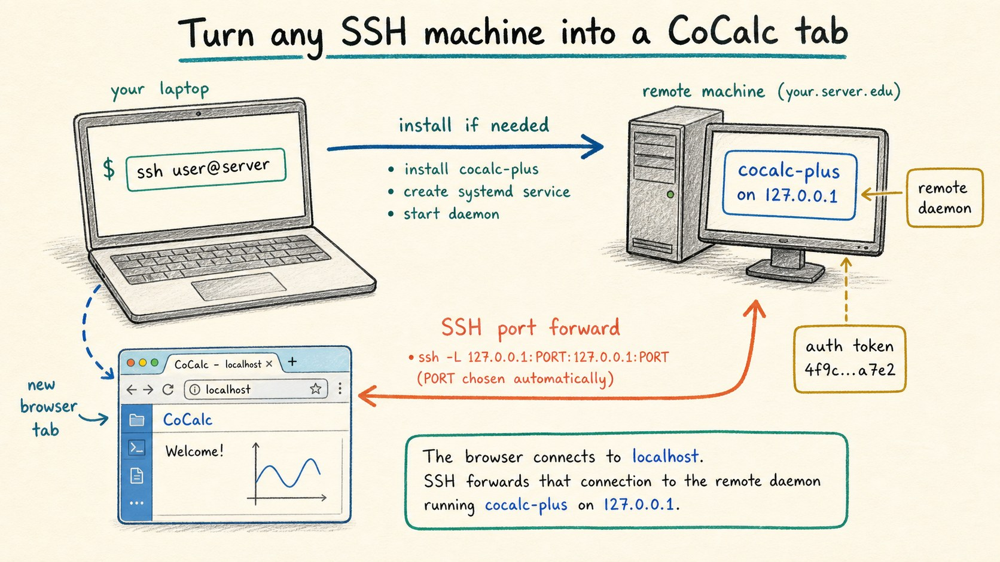
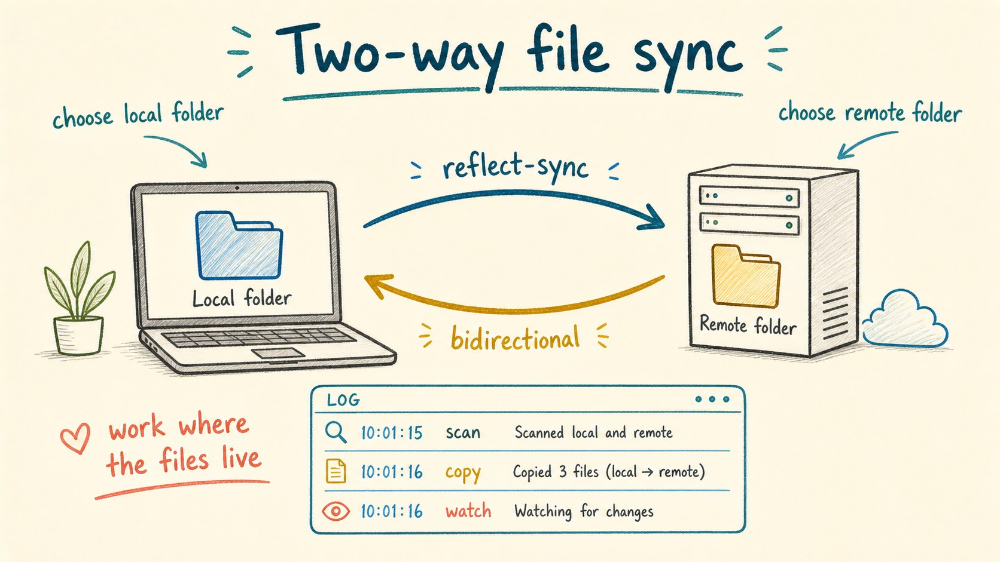
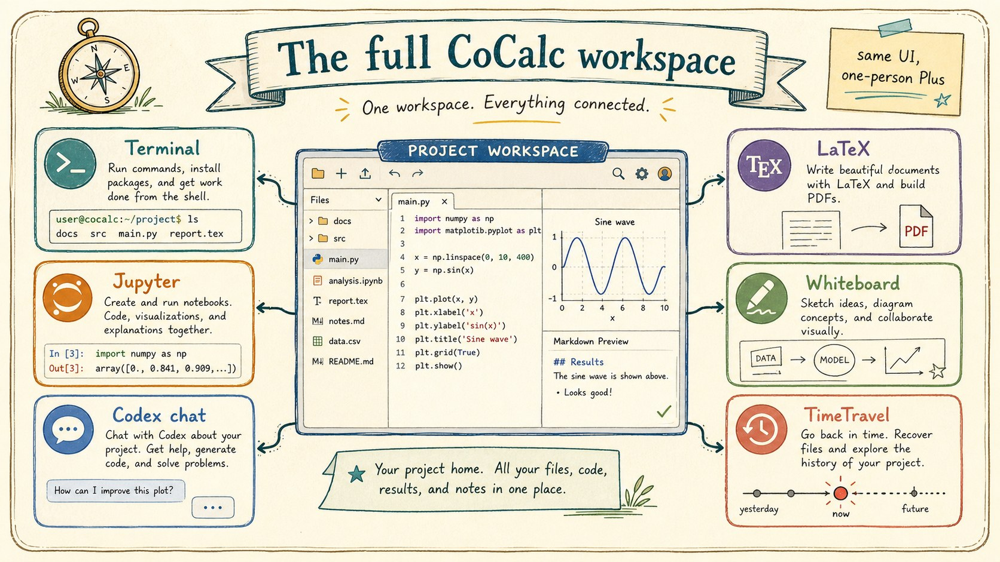
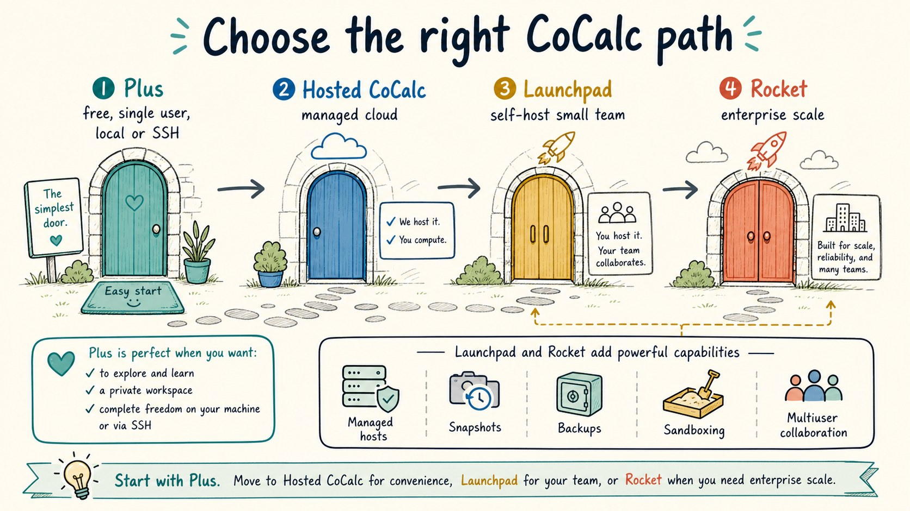

A CoCalc-AI field guide for one-person workspaces
CoCalc Plus
CoCalc Plus is the smallest way to run CoCalc yourself: a free, self-contained app for one user, one project, your own files, and a familiar browser workspace on a laptop, workstation, or SSH reachable machine.

Plus is not a miniature team site and it is not a managed cloud service. It is CoCalc as a personal tool: start it on a machine you control, open the local web server, and work with the files and software already available there.
That makes it a good companion to JupyterLab, VS Code tunnels, SSH, and ordinary terminals. It keeps the setup small while giving you CoCalc's notebooks, terminals, TimeTravel, LaTeX, whiteboards, slides, and Codex chat in one durable browser workspace.
The one-person CoCalc
CoCalc Plus is designed for one admin user. There is one project. There is almost no site configuration. The data lives on the computer where Plus is running, and the app serves a local browser UI instead of asking you to create a hosted account first.
The effect is simple: install a tool, start it, and get a complete CoCalc workspace around your local files. Open another browser tab if you want a second view; realtime collaboration still matters, even when the collaborator is your own second window.
Good fits
- A laptop where you want notebooks, terminals, and Codex chat.
- A remote GPU box that only needs SSH access.
- A shared workstation you personally administer.
- A cloud image that should offer CoCalc beside JupyterLab.
- A private data folder you do not want to upload elsewhere.
Install one small app
Plus is packaged as a Node single-executable application with a small curated tools bundle. The current alpha installer is a single shell command from the public Plus page.
curl -fsSL https://software.cocalc.ai/software/cocalc-plus/install.sh | bash
cocalc-plus
On Linux it installs under
~/.local/share/cocalc-plus and creates a launcher in
~/.local/bin. On macOS it uses
~/Library/Application Support/cocalc-plus. The runtime
uses an embedded SQLite database via Node, so the normal local case
is one lightweight server process.

Turn an SSH machine into a CoCalc tab
The unusual Plus feature is remote launch. If you can SSH to a
machine, Plus can install itself there, start a remote Plus daemon
bound to 127.0.0.1, create an auth token, forward the
port back to your laptop, and open the result in a browser tab.
cocalc-plus ssh user@remote-machineThis is useful for research servers, GPU workstations, rented cloud machines, or any machine where you already trust SSH. You get the convenience of a web workspace without setting up a public web service on the remote host.

Keep a local and remote folder together
Plus also includes a file-sync workflow. Choose a local folder and a
remote folder, and Plus can run a bidirectional sync session between
them. Under the hood this is powered by the bundled
reflect-sync tool and managed from the Plus UI.
That gives you a practical pattern for remote work: keep source files or notebooks in a folder you can inspect locally, run heavy code on the remote machine, and let the sync machinery keep both sides moving together.

Use the same CoCalc workspace
Plus is intentionally small, but the workspace is still CoCalc. You can use terminals, Jupyter notebooks whose execution state is not tied to the browser tab, Codex chat with durable turns and rich markdown input, LaTeX, slides, whiteboards, TimeTravel history, and the usual project file tools.
The point is not to replace every specialized tool. The point is to put the common pieces of computational work in one interface: files, command lines, notebooks, writing, diagrams, agent chat, and history.

Be clear about the trust model
Plus works with the computer where you run it, or a remote computer you can reach by SSH.
It is for one admin user, not a public multiuser service or class site.
Files and commands run with the authority you already have on that machine.
Codex sandboxing is available for agent work, but Plus itself is about convenience and control rather than project isolation.
Know when to step up
Plus is free and intended to remain free. It is also a showcase for what CoCalc feels like when installed next to the files and machines you already use. The long-term vision is for cloud compute providers to offer Plus beside JupyterLab as a simple browser workspace for a single rented machine.
When you need real multiuser collaboration, managed project hosts, snapshots, backups, RootFS images, quota policy, stronger sandboxing, registration, courses, or site administration, move up to hosted CoCalc or self-host with Launchpad. When a Launchpad deployment needs enterprise-grade scale, Rocket is the larger version of the same product family.

CoCalc Plus is the personal door into CoCalc-AI: no site operations, no cloud account, no team policy, just a local or SSH-backed CoCalc workspace. Launchpad, Rocket, and hosted CoCalc are the step up when the same interface needs managed infrastructure around it.